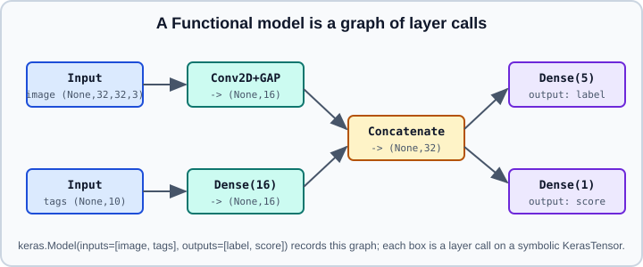

Sequential & Functional Models
|
This content was generated with the assistance of AI and should be verified against the official documentation before being relied on in production. |
Keras offers three ways to define a model: the Sequential API for a plain stack of layers, the Functional API for any directed acyclic graph of layers, and subclassing for arbitrary Python control flow. This page covers the first two. Subclassing is on Subclassing & Custom Layers, the layers themselves are on Core Keras Layers, and training with compile, fit and evaluate is on compile, fit, evaluate & predict. The big picture of the keras package versus tf.keras is in Keras 3 Overview.
It targets Python 3.13 and TensorFlow 2.21 with Keras 3.15 (TensorFlow 2.22 is upcoming), and was checked against the official keras.io guides on 2026-10-30. Examples were run on Python 3.13 with TensorFlow 2.21 and Keras 3.15 (CPU) on 2026-10-31. For the same ideas in PyTorch see nn.Module, and for the conceptual background see Neural Network Fundamentals.
Choosing an API
| API | Topology | Strengths | Limits |
|---|---|---|---|
Sequential |
One input tensor, one output tensor, layers in a line |
Shortest code, easy to read |
No branches, no shared layers, no multiple inputs or outputs |
Functional |
Any acyclic graph, several inputs and outputs, shared and nested layers |
Inspectable and serializable graph, shapes checked while building, |
Cannot express dynamic Python control flow in the forward pass |
Subclassing |
Anything you can write in |
Full flexibility, recursion, data-dependent loops |
Graph is not inspectable up front, more serialization work |
A good rule is to use the Functional API unless the model really is a straight line (then use Sequential) or really needs control flow (then subclass). All three produce a keras.Model, so compile, fit, evaluate, predict, save and callbacks behave identically.
The Sequential model
A keras.Sequential is a list of layers applied in order. Each layer must take exactly one input tensor and return exactly one output tensor.
import keras
from keras import layers
model = keras.Sequential(
[
keras.Input(shape=(28, 28, 1)),
layers.Conv2D(16, 3, activation="relu"),
layers.MaxPooling2D(),
layers.Flatten(),
layers.Dense(10, activation="softmax"),
],
name="small_cnn",
)
model.summary() # shapes are known because an Input was given
print(len(model.layers)) # 4 (the Input is not counted as a layer)Layers can also be added incrementally, which is convenient in loops and conditionals.
model = keras.Sequential(name="incremental")
model.add(keras.Input(shape=(20,)))
for units in (64, 32):
model.add(layers.Dense(units, activation="relu"))
model.add(layers.Dense(1))
model.pop() # removes the last layer
print([layer.name for layer in model.layers])Built versus unbuilt models
A Sequential model without an Input is created without weights. Its layers are built the first time it sees data, or when you call model.build(input_shape). Before that, model.summary() has no shapes to show and model.weights is empty. Supplying keras.Input(shape=...) as the first element, as above, builds the model immediately and is the recommended style in Keras 3. Passing an input_shape or input_dim argument to the first layer still works in some versions but is discouraged and triggers a warning that points you to Input.
lazy = keras.Sequential([layers.Dense(8), layers.Dense(1)])
print(len(lazy.weights)) # 0: nothing built yet
lazy.build((None, 4)) # batch dimension is None
print(len(lazy.weights)) # 4: two kernels and two biasesFeature extraction from a Sequential model
Once a model is built, every layer has an output, so you can create a second model that returns intermediate activations.
extractor = keras.Model(
inputs=model.inputs,
outputs=[layer.output for layer in model.layers],
)
features = extractor(keras.ops.ones((1, 20)))
print([f.shape for f in features])The Functional API
In the Functional API you start from symbolic inputs, call layers on them like functions, and finally wrap inputs and outputs into a keras.Model. The objects flowing through are KerasTensor objects: they carry a shape and dtype but no values, so building the graph is cheap and shape errors appear immediately.
inputs = keras.Input(shape=(784,), name="pixels") # (None, 784), float32
x = layers.Dense(64, activation="relu")(inputs)
x = layers.Dense(64, activation="relu")(x)
outputs = layers.Dense(10, name="logits")(x)
model = keras.Model(inputs=inputs, outputs=outputs, name="mlp")
model.summary()
keras.utils.plot_model(model, "mlp.png", show_shapes=True)Points to remember:
-
keras.Input(shape=...)omits the batch dimension, so the tensor has shape(None, 784). Usebatch_shape=only when a fixed batch size is required, for example by some stateful layers. -
Give inputs, outputs and important layers explicit
name=values. Names are howfitmatches dictionaries of arrays and per-output losses to the right tensors. -
The model records the layer graph, so
model.layers,model.get_layer("logits")andplot_modelall work before training.plot_modelneeds thepydotPython package and the Graphvizdotprogram; without them it raisesImportError("You must install pydot" or "You must install graphviz"). The rest of the example above was run; theplot_modelline was not rendered because Graphviz was not available. -
Output layers that return logits should leave
activation=None; pair them with a loss that usesfrom_logits=True. See Losses.
Branches, merges and residual connections
Because layers are called on tensors, a tensor can feed several layers, and merge layers combine branches. A residual block is a few lines.
def residual_block(x, filters):
shortcut = x
y = layers.Conv2D(filters, 3, padding="same", activation="relu")(x)
y = layers.Conv2D(filters, 3, padding="same")(y)
y = layers.Add()([shortcut, y]) # shapes must match
return layers.Activation("relu")(y)
inputs = keras.Input(shape=(32, 32, 16))
x = residual_block(inputs, 16)
x = residual_block(x, 16)
x = layers.GlobalAveragePooling2D()(x)
outputs = layers.Dense(10)(x)
resnet_like = keras.Model(inputs, outputs)The merge layers are Add, Subtract, Multiply, Average, Maximum, Minimum, Concatenate and Dot. Add needs identical shapes, while Concatenate(axis=-1) only needs the other axes to agree. When the shortcut has a different channel count, project it with a 1x1 Conv2D first.
Multiple inputs and outputs
The Functional API takes lists or dictionaries for inputs and outputs. Dictionaries keyed by layer name are the most readable choice.

image = keras.Input(shape=(32, 32, 3), name="image")
tags = keras.Input(shape=(10,), name="tags")
a = layers.Conv2D(8, 3, activation="relu")(image)
a = layers.GlobalAveragePooling2D()(a) # (None, 8)
b = layers.Dense(8, activation="relu")(tags) # (None, 8)
merged = layers.Concatenate()([a, b]) # (None, 16)
label = layers.Dense(5, name="label")(merged)
score = layers.Dense(1, name="score")(merged)
model = keras.Model(
inputs={"image": image, "tags": tags},
outputs={"label": label, "score": score},
)
model.compile(
optimizer="adam",
loss={
"label": keras.losses.SparseCategoricalCrossentropy(from_logits=True),
"score": keras.losses.MeanSquaredError(),
},
loss_weights={"label": 1.0, "score": 0.2},
)fit then accepts matching dictionaries of arrays, or a tf.data.Dataset yielding (inputs_dict, targets_dict) pairs. A mismatch between dictionary keys and the layer names is the most common error with multi-input models: Keras reports the unexpected or missing key by name.
Sharing layers
Calling the same layer object on two tensors reuses its weights. This is how siamese networks and shared text encoders are written.
shared = layers.Dense(32, activation="relu", name="shared_encoder")
left = keras.Input(shape=(16,), name="left")
right = keras.Input(shape=(16,), name="right")
zl, zr = shared(left), shared(right) # same kernel and bias
distance = layers.Lambda(
lambda t: keras.ops.sum(keras.ops.square(t[0] - t[1]), axis=-1, keepdims=True),
output_shape=(1,),
)([zl, zr])
siamese = keras.Model([left, right], distance)
print(len(siamese.trainable_weights)) # 2, not 4Lambda wraps an arbitrary function. Prefer a small custom layer (see Subclassing & Custom Layers) when the model needs to be saved: Keras 3 loads Lambda layers that contain Python code only when safe mode is off, because deserializing code can execute arbitrary code.
Models as layers
A keras.Model is itself a layer, so models nest. You can call a model on a new Input, reuse a trained encoder inside a bigger model, or average an ensemble.
def make_member(seed_name):
inp = keras.Input(shape=(8,))
out = layers.Dense(1, activation="sigmoid")(layers.Dense(16, activation="relu")(inp))
return keras.Model(inp, out, name=seed_name)
members = [make_member(f"member_{i}") for i in range(3)]
inputs = keras.Input(shape=(8,))
ensemble = keras.Model(inputs, layers.Average()([m(inputs) for m in members]))Weights are shared with the original member models, so training the ensemble also updates them unless you set member.trainable = False before compiling.
Inspecting and reusing a graph
base = keras.applications.MobileNetV2(weights=None, include_top=False,
input_shape=(96, 96, 3))
print(base.get_layer("block_3_expand").output.shape)
# A new model that exposes an intermediate tensor
partial = keras.Model(base.input, base.get_layer("block_3_expand").output)Because the graph is static, any intermediate tensor can become an output. This is the standard way to build multi-scale feature extractors; the mechanics are also used in Transfer Learning & Fine-Tuning.
Limits of the Functional API
-
The graph is acyclic: no loops, and no layer feeding back into itself. Recurrent behaviour is expressed with recurrent layers.
-
Python control flow in a layer call is evaluated once while the symbolic graph is traced, not per sample. Branching on tensor values needs a custom layer using
keras.ops.cond,keras.ops.whereor a subclassed model. -
Layers called on a symbolic tensor must support symbolic execution. In Keras 3 this means a layer’s computation should be expressed with
keras.ops, otherwise it cannot run on every backend.
Common pitfalls
-
Forgetting the batch dimension:
keras.Input(shape=(784,)), notshape=(None, 784). -
Calling
model.summary()on an unbuilt Sequential and seeing no shapes; add anInputor callbuild. -
Reusing one layer instance on inputs of different feature size: the layer is built on its first call, so later calls fail with a shape mismatch.
-
Expecting
Sequential.layersto include theInput: it does not. -
Mixing
tf.keraswith the standalonekeraspackage in one script, which creates objects of two different class hierarchies. Pick one import style; see Keras 3 Overview.
References
-
Sequential model guide: https://keras.io/guides/sequential_model/
-
Functional API guide: https://keras.io/guides/functional_api/
-
Model API reference: https://keras.io/api/models/
-
Keras 3 announcement and migration notes: https://keras.io/keras_3/
-
TensorFlow Keras overview: https://www.tensorflow.org/guide/keras